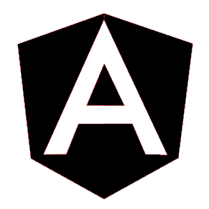
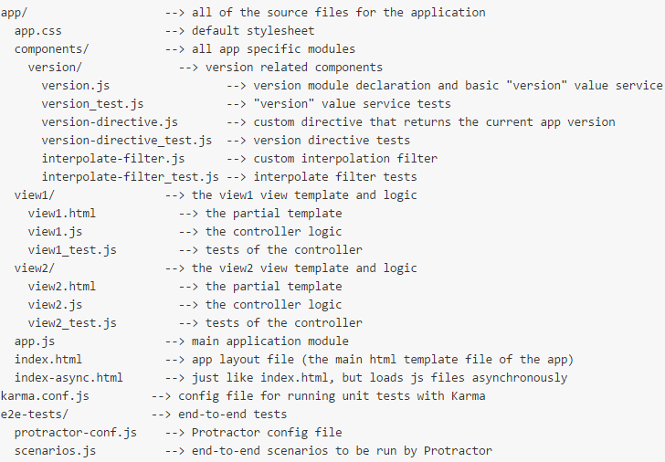
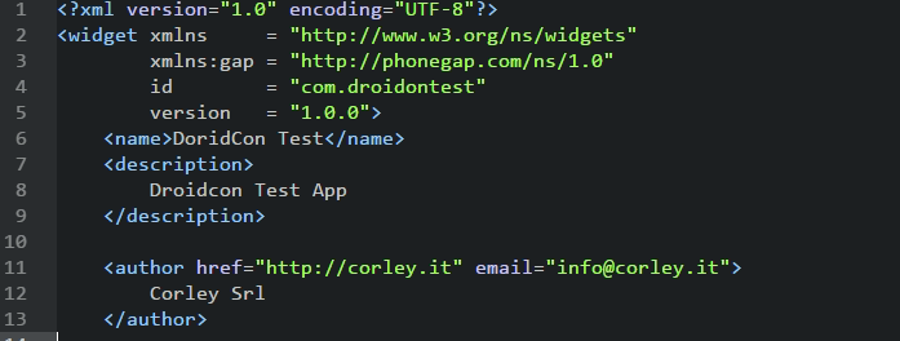
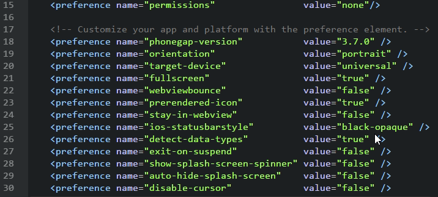
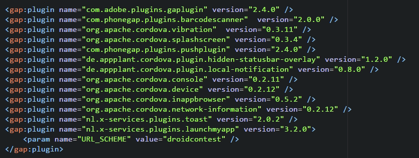
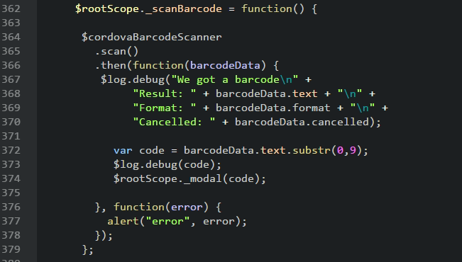
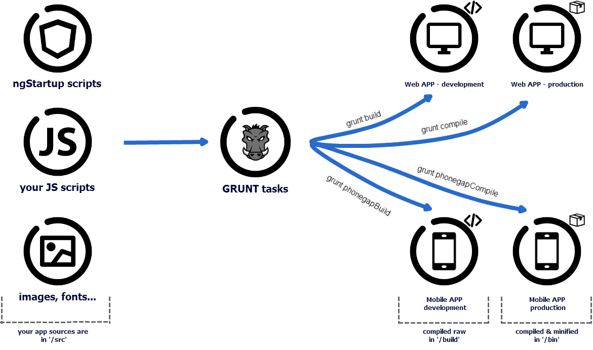

AngularJS
from Code to Mobile
DroidCon 2015
Who I am?
Gabriele Mittica
@gabrielemittica
from CorleyCloud

CloudConf Ideator
I'm the Enemy
Never saw a line
of android code
Customer's view
Your job
The goal:
Merge together different technologies to simplify app development
(AngularJS, PhoneGap, Bower, Grunt, Bootstrap...)

HTML enhanced for web apps
Once i said
AngularJS is complicated
M. Servienti replied:
AngularJS is Complex
jQuery is imperative
AngularJS is declarative
With AngularJS you can write real frontend apps that work perfectly with RESTful resources

Create mobile apps using standardized web APIs
Download it
or use build.phonegap.com
to deploy on mobile
with just a config.xml file




how to put it in?

Automate repetitive tasks
| Devices | Code | Grunt | PhoneGap | |||
|---|---|---|---|---|---|---|
|
|
|
|
|
|
||
|
|
||||||
|
|
|
|
|
|
|
|
The benefits
- Reduced time on dev
- One project, several devices
- Powerful instruments
- Easy to adopt
This is
the perfect solution!
No!
Use it in the right situation.
Perfect strategy for
- Lateral and side apps
- Apps that work with RES
- Teams no focused on mobile dev
- Enhanced HTML apps